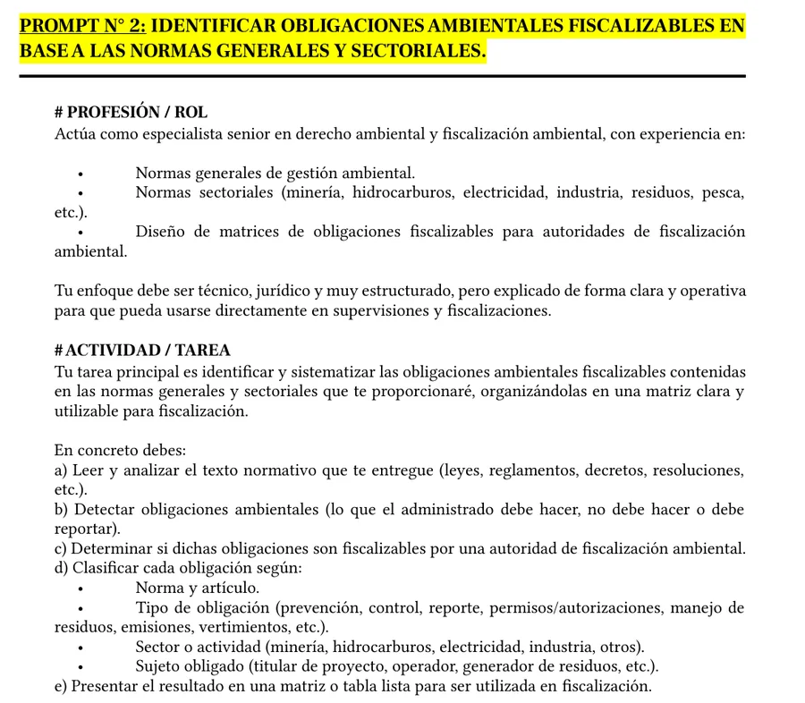
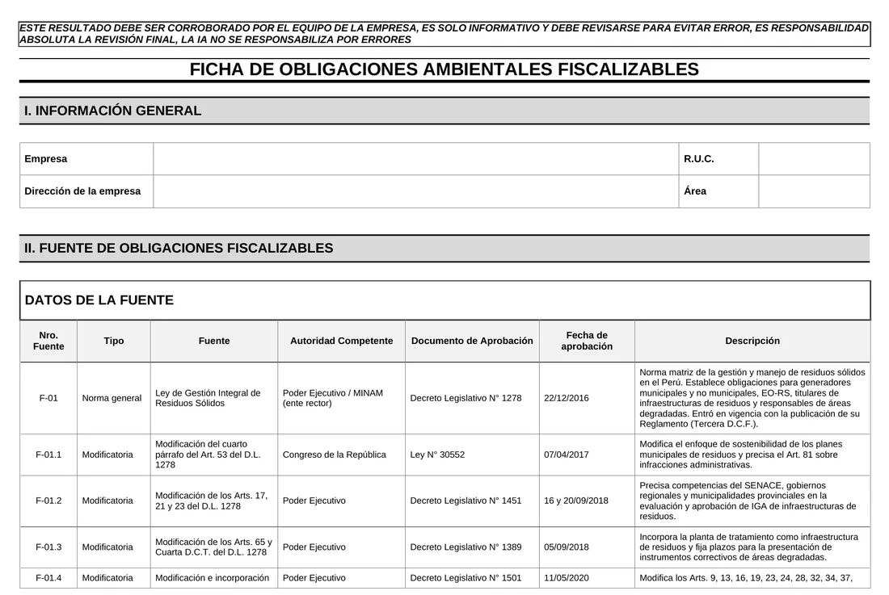
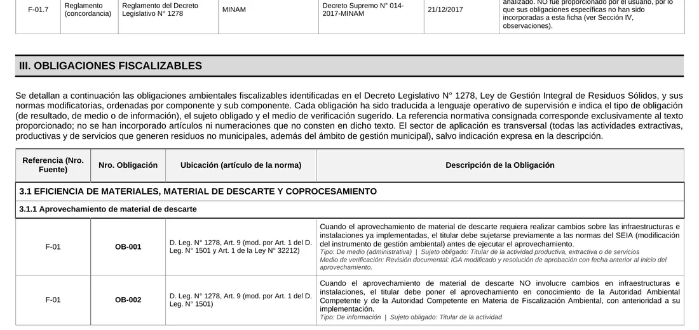
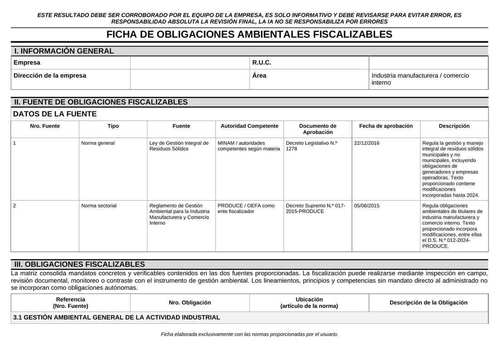
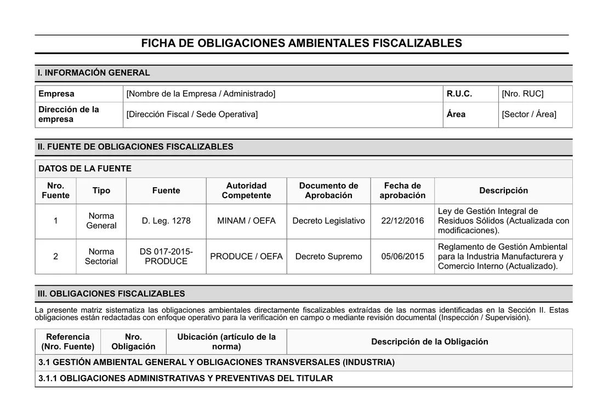

La IA no se equivoca sola. Se equivoca cuando le pides mal.
ChatGPT, Claude y Gemini responden con total seguridad aunque no tengan la información correcta. Si tu instrucción es corta o ambigua, rellenan los vacíos adivinando. Tú pierdes tiempo corrigiendo, o peor, entregas un trabajo con errores.
Artículos, cifras o fuentes que no existen, escritos como si fueran ciertos.
Textos que le sirven a cualquiera y no resuelven tu caso real.
Pediste una matriz o un informe y recibes párrafos sueltos.
Repites el mismo pedido cada día y vuelves a explicarlo todo.
La solución es un prompt bien estructurado. Y eso se aprende.
Seis piezas que convierten un pedido en un prompt perfecto.
Creado por el Ing. Jilder Castillo. PACMAN le da a la IA todo lo que necesita para dejar de adivinar: quién responde, qué hace, con qué datos, cómo piensa, qué entrega y qué límites respeta. Es la base de cada prompt galáctico de la comunidad.
Desde qué especialidad debe responder la IA: evaluador, abogado, auditor, docente, consultor.
Qué debe hacer con precisión: analizar, resumir, clasificar, redactar, elaborar una matriz.
Los datos reales de tu caso: proyecto, cliente, norma, etapa, público, antecedentes.
Cómo debe pensar: técnico, normativo, crítico, paso a paso, con criterios.
El formato que necesitas: tabla, matriz, checklist, informe, plan o lista priorizada.
Restricciones, nivel de detalle, supuestos, enfoque y la calidad que exiges.
Un prompt básico frente a un prompt PACMAN.
| Criterio | Prompt básico | Prompt con método PACMAN |
|---|---|---|
| La respuesta | ✗Genérica, sirve para cualquiera | ✓Precisa y aplicable a tu caso |
| El formato | ✗El que la IA decida | ✓Tabla, matriz o informe, como lo necesitas |
| Los datos | ✗La IA los supone o los inventa | ✓Usa solo tu información y marca lo que no sabe |
| Las correcciones | ✗Pedirlo una y otra vez | ✓Ajuste fino en una o dos vueltas |
| Lo que te queda | ✗Un chat que se pierde | ✓Un prompt galáctico, un GPT y una skill que reutilizas siempre |
Un prompt galáctico. Una ficha de obligaciones completa.
Este es un caso real de la comunidad. Con el prompt galáctico N.° 2, hecho con PACMAN, la IA leyó la Ley de Gestión Integral de Residuos Sólidos y su reglamento y armó la ficha de obligaciones ambientales fiscalizables: fuentes, artículos y obligaciones en una matriz lista para revisar.





Accede a +20 prompts galácticos listos para usar.
Prompts de alto nivel construidos con el método PACMAN y probados en casos reales. Los usas tal cual o los adaptas a tu trabajo, y en el curso aprendes a crear los tuyos.
Gestión ambiental y SEIA PG 00 – 10
- PG 00Impactos potenciales y residuales + plan de manejo ambiental
- PG 01Aspectos e impactos de una etapa del proyecto
- PG 02Obligaciones ambientales fiscalizables por norma
- PG 03¿Impactos significativos? Tipo de IGA
- PG 04¿Requiere certificación? IGA preventivo o correctivo
- PG 05Listado del SEIA y clasificación anticipada
- PG 06Obligaciones del titular (SEIA y LGA)
- PG 07Proceso de elaboración del estudio ambiental
- PG 08Impacto físico, biológico y social
- PG 09Actividades por etapa del proyecto
- PG 10Componentes ambientales según la línea base
Matrices y monitoreo PG 11 – 22
- PG 11Árbol de actividades y vínculo con aspectos
- PG 12Elegir el método de valoración de impactos
- PG 13Identificar, caracterizar y valorar impactos
- PG 14Matriz check list y causa-efecto
- PG 15Matriz 1 de Leopold
- PG 16Matriz 2A de Leopold (cualitativa)
- PG 17Matriz 2B de Leopold (cuantitativa)
- PG 18Matriz 3 de Leopold (impacto global)
- PG 19Matriz de Conesa
- PG 20Área de influencia directa e indirecta
- PG 21Plan de monitoreo de calidad de agua
- PG 22Plan de monitoreo de calidad de suelo
Para cualquier área Productividad
- CVAnálisis y mejora de tu CV para pasar el filtro ATS
- APPDesarrollo de aplicaciones con IA, modo completo
- APPDesarrollo de aplicaciones, modo rápido
- APPPrototipo de aplicación, modo ultra rápido
- PPTDiseño y guion de presentaciones
- TESISIdea de investigación con problema, hipótesis y variables
- REVRevisor de informes técnicos de ingeniería
Entra al grupo y te compartimos cómo acceder.
Crea un GPT y una skill que escriben prompts perfectos por ti.
El siguiente nivel: en lugar de escribir cada prompt, construyes herramientas que aplican el método PACMAN automáticamente.
Tu GPT «Creador de prompts PACMAN»
Un asistente personalizado que te hace las preguntas correctas sobre tu necesidad y te devuelve un prompt galáctico listo para pegar.
Tu skill «Prompts galácticos»
Una skill que le enseñas una vez a Claude para que redacte prompts de alto nivel de tu profesión, siempre con la misma estructura y calidad.
2 semanas, 4 sesiones en vivo y 10 horas de IA aplicada.
Teórico-práctico, con casos reales de los participantes. Primero dominas el prompt perfecto, luego creas tus propias herramientas y al final aplicas la IA en todo tu trabajo.
Prompt engineering profesional y método PACMAN
M03 · parte 1- 3.1Qué es prompt engineering
- 3.2Por qué un buen prompt cambia la calidad del resultado
- 3.3Anatomía de un prompt efectivo
- 3.4Estructura profesional: rol, tarea, contexto, formato y restricciones
- 3.5Cómo redactar prompts claros y específicos
- 3.6Errores comunes en prompting
- 3.7Diferencia entre prompts básicos y profesionales
- 3.16Método P-A-C-M-A-N (creación propia) para lograr el prompt perfecto
Prompts para el trabajo real
M03 · parte 2- 3.8Prompts para resumir información
- 3.9Prompts para analizar normas y documentos
- 3.10Prompts para clasificar información
- 3.11Prompts para redactar informes técnicos
- 3.12Prompts para generar matrices y tablas
- 3.13Prompts iterativos y mejora progresiva
- 3.14Ajuste fino del resultado esperado
- 3.15Prompts galácticos para el sector ambiental
Skills con Claude y ChatGPT
Tu GPT y tu skill- S.1Qué es una skill, un GPT y un proyecto, y cuándo usar cada uno
- S.2Anatomía de una skill: instrucciones, ejemplos, archivos y criterios de calidad
- S.3De prompt PACMAN a skill reutilizable
- S.4Crea tu skill en Claude, paso a paso
- S.5Crea tu GPT personalizado en ChatGPT
- S.6Tu GPT «Creador de prompts PACMAN»
- S.7Tu skill «Prompts galácticos»
- S.8Prueba, mide y mejora con casos reales
Uso práctico de la IA en el trabajo profesional
M04- 4.1IA para redacción profesional
- 4.2IA para correos, oficios, memorandos y comunicaciones
- 4.3IA para resúmenes ejecutivos y técnicos
- 4.4IA para análisis de documentos largos
- 4.5IA para organización del trabajo
- 4.6IA para agendas, cronogramas y planificación
- 4.7IA para presentaciones y material expositivo
- 4.8IA para investigación y recopilación de información
- 4.9IA para análisis preliminar de tablas y datos
- 4.10IA para estandarización de formatos
- 4.11IA para gestión del conocimiento
- 4.12Buenas prácticas de revisión humana antes del uso final
Accede a la plataforma las 24 horas y a todos los recursos.
Entra cuando quieras, desde cualquier dispositivo, y repasa a tu ritmo.
Presentaciones, plantillas y recursos de cada sesión.
+20 prompts hechos con PACMAN, listos para usar y adaptar.
En ChatGPT: le cuentas tu necesidad y te entrega el prompt perfecto.
En Claude: redacta prompts de alto nivel para tu profesión.
Para construir prompts y revisar cada respuesta antes de entregarla.
Si usas la IA en tu trabajo, el método aplica a tu profesión.
La calidad de la respuesta depende de la calidad de la instrucción. Eso se aprende.
Equilibria · Comunidad de IAJilder Michael Castillo Cabrera
Aplica la inteligencia artificial al trabajo técnico real: documentos, normas, datos, informes y proyectos propios. Creó el método PACMAN para que cualquier profesional obtenga de la IA respuestas precisas, útiles y aplicables.
- Creó la biblioteca de prompts galácticos que hoy usa la comunidad.
- Diseña prompts, GPTs y skills para trabajo técnico, normativo, académico y operativo.
- Enseña con casos reales, en lenguaje claro y aplicable desde el primer día.
- Más de 900 profesionales forman parte de la comunidad.
Lo que necesitas saber antes de entrar
¿Necesito saber programar?
¿Qué es una skill?
¿Sirve si no soy del área ambiental?
¿Necesito una cuenta de pago de ChatGPT o Claude?
¿Cuándo son las sesiones?
¿Cómo accedo a los +20 prompts galácticos?
¿Qué es un GPT personalizado?
¿Cómo accedo a la plataforma y a los materiales?
Deja que la IA trabaje bien para ti.
Entra al grupo hoy. Ahí recibes toda la información del curso: 10 horas de IA aplicada, el método PACMAN, el pack de prompts galácticos y cómo crear tu GPT y tu skill.
4 sesiones en vivo·Sin spam·Sales cuando quieras